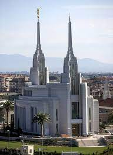

Featured Temple:
Rome,Italy Temple
The resplendent interior of the Rome Italy Temple features beautiful Italian-quarried Perlato Svevo marble on surfaces throughout the building including floors, walls, and countertops. Other stones quarried in Italy, Spain, Turkey, and Brazil, are inlaid as accents. Magnificent floor work is featured in the baptistry and grand foyer, which reflects Michelangelo's design at the Piazza del Campidoglio on top of Rome's Capitoline Hill. The pattern is also seen in the sculpted off-white carpets in the Celestial and sealing rooms. The majesty of the temple is further reflected in the choice of artwork, stained glass, crown moldings, and other furnishings and finishes.